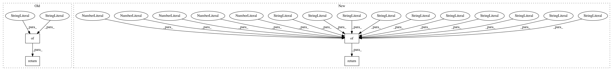

e7f5af1e34e07a3e9f3ef886827beac62507d4f9,texar/modules/decoders/transformer_decoders.py,TransformerDecoder,default_hparams,#,83
Before Change
maximum_decode_length: The maximum length when decoding.
The meaning of other parameters are similar to TransformerEncoder
return {
"initializer": None,
"position_embedder_hparams": None,
"share_embed_and_transform": True,
"transform_with_bias": True,
"num_heads":8,
"num_blocks":6,
"maximum_decode_length":256,
"embedding_dropout":0.1,
"attention_dropout":0.1,
"residual_dropout":0.1,
"poswise_feedforward": {
"name":"ffn",
"layers":[
{
"type":"Dense",
"kwargs": {
"name":"conv1",
"units":2048,
"activation":"relu",
"use_bias":True,
}
},
{
"type":"Dropout",
"kwargs": {
"rate": 0.1,
}
},
{
"type":"Dense",
"kwargs": {
"name":"conv2",
"units":512,
"use_bias":True,
}
}
],
},
"dim":512,
"alpha":0,
"name":"decoder",
}
def _prepare_tokens_to_embeds(self, tokens):
a callable function to transform tokens into embeddings.
token_emb = tf.nn.embedding_lookup(self._embedding, tokens)
After Change
"name" : str
Name of the module.
return {
"num_heads": 8,
"num_blocks": 6,
"alpha": 0,
"initializer": None,
"position_embedder_hparams": None,
"embedding_tie": True,
"output_layer_bias": True,
"max_decoding_length": 1e10,
"embedding_dropout": 0.1,
"attention_dropout": 0.1,
"residual_dropout": 0.1,
"poswise_feedforward": default_transformer_poswise_net_hparams(),
"dim": 512,
"name": "transformer_decoder",
}
def _prepare_tokens_to_embeds(self, tokens):
a callable function to transform tokens into embeddings.
token_emb = tf.nn.embedding_lookup(self._embedding, tokens)
In pattern: SUPERPATTERN
Frequency: 3
Non-data size: 4
Instances
Project Name: asyml/texar
Commit Name: e7f5af1e34e07a3e9f3ef886827beac62507d4f9
Time: 2018-08-23
Author: zhitinghu@gmail.com
File Name: texar/modules/decoders/transformer_decoders.py
Class Name: TransformerDecoder
Method Name: default_hparams
Project Name: asyml/texar
Commit Name: e7f5af1e34e07a3e9f3ef886827beac62507d4f9
Time: 2018-08-23
Author: zhitinghu@gmail.com
File Name: texar/modules/encoders/transformer_encoders.py
Class Name: TransformerEncoder
Method Name: default_hparams
Project Name: asyml/texar
Commit Name: be5d1e0e02ec7ad1d95b10e5a869001cf631998e
Time: 2017-12-09
Author: zichaoy@cs.cmu.edu
File Name: examples/tsf/classifier_trainer.py
Class Name: ClassifierTrainer
Method Name: default_hparams